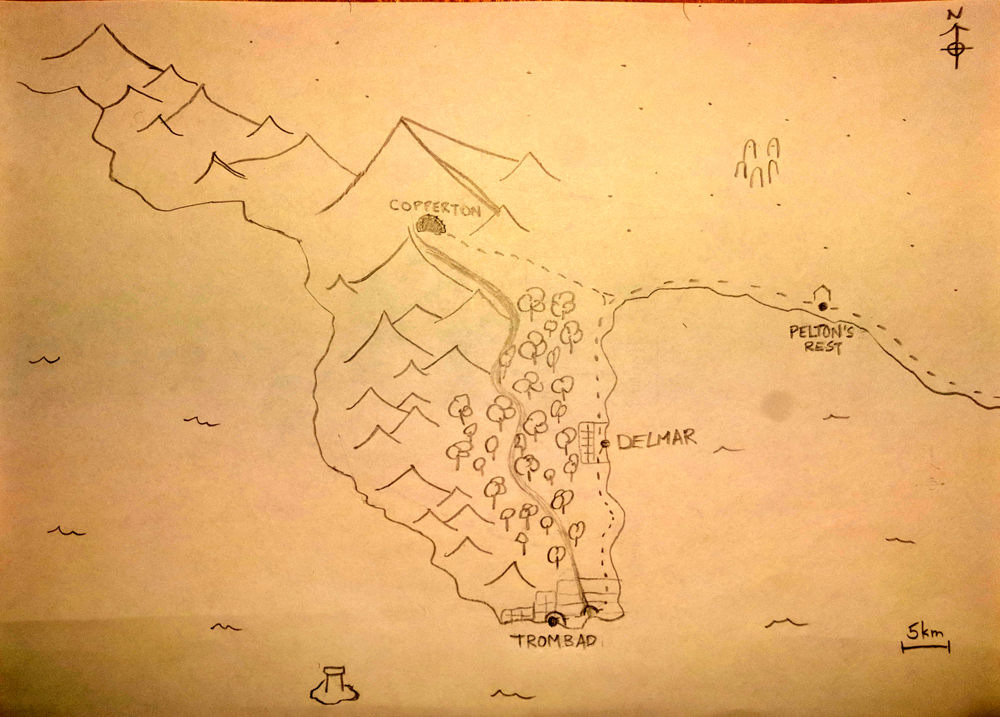

<div style='display: flex; flex-direction: column; align-items: center'>
  <div style='max-width: 60em'>
    <h1>Introduction</h1>
    <p>
      You're not big-time heros.
      No one from Delmar is.
      But something has gone wrong in Trombad.
      Trade has slowed, and rumor is that the great Horbert Hammarberger is dead.
      The people of Delmar have gathered their resources and put up a bounty to anyone who can bring justice and answers.
      Everyone know's you're the only ones who can help.
      While some have fled already, others bravely and politely await your answer.
    </p>
    
    <h1>Trombad</h1>
    <p>
      You've been to Trombad.
      It was too noisy.
      Usually when Trombad is in trouble, they look to their four heros:
      Horbert Hammarberger, the Laughing Paladin;
      Quentin Thenger, the Sneak with a Gold Heart;
      Winifrid Bolthosor, the Wizard's Wizard;
      and Ruzolph Quixley, the Steadfast Ranger.
    </p>
    <h1>Delmar</h1>
    <p>
      You're from Delmar.
      It's alright.
    </p>
    <h1>The Rest</h1>
    <p>
      There's a dwarven establishment to the north, Copperton.
      Pelton's Rest is a stopping point for travelers coming and going to the Eastlands.
      Goblins and Elves live in the forest.
      No one likes the Goblins.
      Some of the elves are alright.
    </p>
    <p>
      Today is May 2nd of the year 297, of the tenth common era. Fingers crossed we make it to 300 this time.
    </p>
  </div>
</div>
